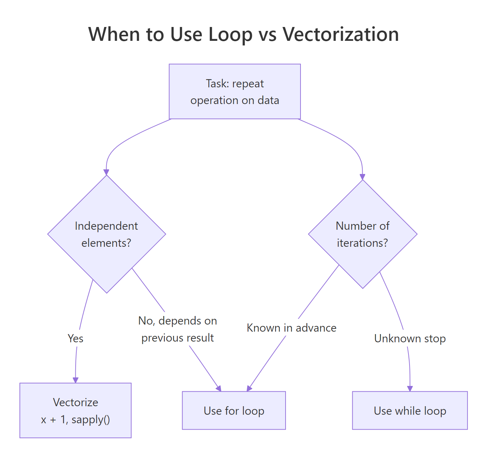

R Control Flow: if/else, for, and while, Stop Avoiding Loops
Control flow is how you tell R to make decisions (if/else) and repeat work (for, while). R has a reputation for hating loops, but that's half-true. This guide shows you when loops are fine, when they're slow, and when a vectorized one-liner replaces twenty lines of iteration.
How does if/else work in R?
An if statement runs a block of code only when a condition is TRUE. Attach an else and you get a two-way branch. Attach else if and you chain as many branches as you need. The syntax is C-like, with one important R twist: the condition must be a single TRUE or FALSE, not a vector.
The braces { } aren't strictly required for one-line bodies, but they prevent bugs, always use them. The message functions message(), warning(), and stop() are the three channels for progress, caution, and error output.

Figure 1: An if/else if/else chain evaluates conditions top to bottom and runs the first block whose condition is TRUE. At most one block runs.
if (x > 0) requires x to be length-1. If x is a vector, you get "the condition has length > 1" (an error in R 4.2+). For vectors, use ifelse() or logical indexing, see the next section.Try it: Write an if/else if/else that classifies a grade (0-100) as "A", "B", "C", or "F".
Click to reveal solution
The chain evaluates top to bottom and runs the first branch whose condition is TRUE, 83 fails >= 90 but passes >= 80, so "B" is returned and the remaining branches are skipped. The final else is the fallback for anything below 70.
How do you branch across a whole vector with ifelse() and dplyr::case_when()?
For vectors, if is the wrong tool. Use ifelse(), the vectorized, element-wise version. It takes a logical vector, a value for the TRUE positions, and a value for the FALSE positions.
The nested ifelse() works but gets ugly fast. For multi-way branching across vectors, dplyr::case_when() is far cleaner:
The TRUE at the end is the catch-all, think of it as the else. Every row must match at least one condition, so always include a fallback.
if statement inside a for loop over a vector, stop and ask: can I use ifelse() or case_when() instead? Nine times out of ten you can, and the vectorized version is 10-100× faster.Try it: Use ifelse() on c(-3, 5, -1, 8, 0) to return "neg", "pos", or "zero", note that basic ifelse() handles two branches; you'll need a nested call.
Click to reveal solution
ifelse() only handles a two-way split, so the third category is expressed by nesting another ifelse() in the "FALSE" slot. The outer call catches positives, the inner call catches negatives, and anything that fails both conditions (only 0 here) falls through to "zero".
How do for loops work in R?
A for loop in R iterates over any object with a length, most commonly a vector. The loop variable takes each value in turn.
You can iterate over any vector, not just integers:
When you need the index and the value, iterate over seq_along():
Prefer seq_along(x) over 1:length(x), if x is empty, 1:length(x) gives 1:0 = c(1, 0) and loops twice with wrong values. seq_along(c()) correctly returns an empty vector.
Try it: Loop over c(10, 20, 30) and print the running sum at each step.
Click to reveal solution
running is initialized to 0 outside the loop so each iteration can read the accumulated total and add the current x to it. Printing inside the loop shows the running total after each step, 10, then 30, then 60.
When is a for loop the wrong tool?
R's reputation for slow loops comes from one specific anti-pattern: growing a result inside a loop. Watch this:
Every c(result, i^2) copies the entire vector and allocates a new one. It's O(n²), slow enough to notice past a few thousand elements. The fix is either pre-allocation:
…or skipping the loop entirely with vectorization:
All three give the same answer. The vectorized version is by far the fastest (and shortest), the pre-allocated loop is a respectable second, and the growing-vector version is the one that gave R loops their bad name.
result <- c(result, ...) inside a loop, stop. Either pre-allocate with numeric(n) / vector("list", n), or find the vectorized equivalent. Your future self and your coworkers will thank you.Try it: Rewrite this slow loop as a one-line vectorized expression: out <- c(); for (x in 1:5) out <- c(out, x * 10).
Click to reveal solution
Multiplying a vector by a scalar applies the operation to every element at once, no loop, no pre-allocation, no c() calls. That's what "vectorized" means in R: the work happens in compiled C code with a single allocation instead of N append-and-copy steps.
How do while loops and break/next work?
A while loop runs as long as its condition is TRUE. Use it when you don't know in advance how many iterations you need, typically convergence loops, polling, or random-stopping situations.
break exits a loop immediately. next skips the rest of the current iteration and starts the next one. Both work in for and while.
The loop printed 1 and 3 (odd numbers), skipped 2 and 4 via next, and broke at 5 before printing. break and next are sharp tools, useful, but a clue that your logic could often be expressed more declaratively.
repeat { ... } is R's infinite loop, equivalent to while (TRUE). Always pair it with a break or you'll lock up your session.Try it: Write a while loop that keeps dividing n by 2 until it's below 10, starting from n = 1000. Print the final value.
Click to reveal solution
The loop halves n each pass (1000 → 500 → 250 → 125 → 62.5 → 31.25 → 15.625 → 7.8125) and rechecks the condition at the top. Once n drops below 10, n >= 10 becomes FALSE and the loop exits with the first value that fell under the threshold.
When should you prefer apply-family functions over loops?
R has a family of functions, lapply(), sapply(), vapply(), mapply(), apply(), that replace many loops with a single function call. They're not magically faster than a well-written for loop (they use loops under the hood), but they express intent more clearly.
apply(mat, 1, f) applies f to every row (margin = 1); apply(mat, 2, f) to every column. The apply family shines when you want "for each element, compute X" without the bookkeeping of indexing, pre-allocation, and assembling results.
Try it: Use sapply() to get the length of each vector in values.
Click to reveal solution
sapply() calls length() on each list element and simplifies the result to a named integer vector, the names come from the list's own names. a has 5 elements, while b and c each have 6 (inclusive integer ranges).
Practice Exercises
Exercise 1: FizzBuzz in R
Print numbers 1 to 15. For multiples of 3 print "Fizz", multiples of 5 print "Buzz", multiples of both print "FizzBuzz".
Show solution
Or vectorized:
Exercise 2: First power of 2 exceeding N
Write a while loop that finds the smallest power of 2 strictly greater than 1,000,000.
Show solution
Exercise 3: Convert a loop to vectorized
This loop computes squared distance from the mean for each element. Rewrite it in one vectorized line.
Show solution
Putting It All Together
A realistic workflow: simulate 1,000 coin flips, track how many flips you need until you hit 5 heads in a row, and repeat the experiment 500 times to estimate the average.
One while loop wrapped in a function, then sapply() to replicate it 500 times, then one-line summaries. That's the idiomatic R pattern: iterate where you must, vectorize where you can.
Summary
| Construct | Use when |
|---|---|
if / else if / else |
A single scalar decision |
ifelse() / case_when() |
Element-wise branching across a vector |
for (x in seq) { } |
Known iteration count; pre-allocate the result |
while (cond) { } |
Unknown iteration count; convergence or polling |
break / next |
Early exit / skip iteration, use sparingly |
lapply() / sapply() / apply() |
"For each element, compute X", cleaner than a loop |
| Vectorized op | Arithmetic or boolean work on every element, always preferred |
References
- R Language Definition, Control Flow
- Advanced R, Control flow by Hadley Wickham
- R for Data Science, Iteration
- R Inferno, Growing objects, why growing vectors in loops kills performance
- The R Inferno, Circle 2, vectorization patterns
Continue Learning
- R Vectors: The Foundation of Everything in R, why vectorized ops beat loops.
- R Data Frames: Every Operation You'll Need, filter and transform without explicit loops.
- R Lists: When Data Frames Aren't Flexible Enough, the structure that
lapply()returns by default.